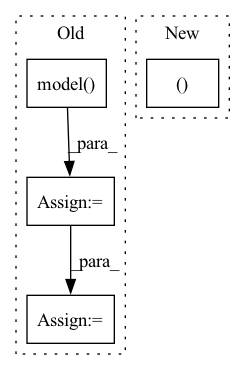

Pattern ID :40907
Before Change
else:
epsilon = torch.randn_like(input) * std
noisy_input = (input + epsilon).requires_grad_()
output = self.model( noisy_input)
gradient, = torch.autograd.grad((output,), (noisy_input,), grad_outputs=(attr_output_fn(output.detach()),))
result += gradient / self.n_iter
// output is leaking from the loop for the last epsilon (which is zero)After Change
epsilon = torch.zeros_like(input)
else:
epsilon = torch.randn_like(input) * std
output, gradient = self.grad(input + epsilon, attr_output_fn)
result += gradient / self.n_iter
// output is leaking from the loop for the last epsilon (which is zero)In pattern: SUPERPATTERN
Frequency: 3
Non-data size: 4
Instances Fragment ID: 115347067
Project Name: chr5tphr/zennit
Commit Name: 8a94236e24ffcb390e2d5a6b550d993cf6633ae4
Time: 2022-09-29
Author: chrstphr@posteo.eu
File Name: src/zennit/attribution.py
M Class Name: SmoothGrad
N Class Name: SmoothGrad
M Method Name: forward(3)
N Method Name: forward(3)
M Parent Class: Gradient
N Parent Class: Attributor
M File Name: src/zennit/attribution.py
N File Name: src/zennit/attribution.py
M Start Line: 282
M End Line: 297
N Start Line: 366
N End Line: 366
Before Change
image = torch.from_numpy(image).unsqueeze(0).to(device)
mask = torch.from_numpy(mask).unsqueeze(0).to(device)
inpainted_image = self.model( image, mask)
cur_res = inpainted_image[0].permute(1, 2, 0).detach().cpu().numpy()
cur_res = cur_res[0:origin_height, 0:origin_width, :]
cur_res = np.clip(cur_res * 255, 0, 255).astype("uint8")
cur_res = cv2.cvtColor(cur_res, cv2.COLOR_BGR2RGB)
return cur_res
After Change
image = (image.transpose(1, 2, 0) * 255).astype(np.uint8)[:, :, ::-1]
for crop_image, crop_box in crop_result:
x1, y1, x2, y2 = crop_box
image[y1:y2, x1:x2, :] = crop_image
return image
Fragment ID: 115347136
Project Name: sanster/lama-cleaner
Commit Name: 43c9c22c7312dd39feac4e3783e9ec080fd64243
Time: 2022-03-22
Author: cwq1913@gmail.com
File Name: lama_cleaner/lama/__init__.py
M Class Name: LaMa
N Class Name: LaMa
M Method Name: __call__(3)
N Method Name: __call__(3)
M Parent Class:
N Parent Class:
M File Name: lama_cleaner/lama/__init__.py
N File Name: lama_cleaner/lama/__init__.py
M Start Line: 40
M End Line: 55
N Start Line: 50
N End Line: 65
Before Change
A :obj:`bytes`:. The raw audio encoded as a wav format.
text = inputs
outputs = self.model( text)
speech = outputs[0]
array = speech.numpy()
return array, self.model.fs
After Change
outputs = self.model(inputs)
speech = outputs["wav"]
return speech.numpy(), self.sampling_rate
Fragment ID: 115347132
Project Name: huggingface/huggingface_hub
Commit Name: 0353f58e0172bd816a63e02e07cd2a5a365432ba
Time: 2021-09-08
Author: osanseviero@users.noreply.github.com
File Name: api-inference-community/docker_images/espnet/app/pipelines/text_to_speech.py
M Class Name: TextToSpeechPipeline
N Class Name: TextToSpeechPipeline
M Method Name: __call__(2)
N Method Name: __call__(2)
M Parent Class: Pipeline
N Parent Class: Pipeline
M File Name: api-inference-community/docker_images/espnet/app/pipelines/text_to_speech.py
N File Name: api-inference-community/docker_images/espnet/app/pipelines/text_to_speech.py
M Start Line: 20
M End Line: 24
N Start Line: 26
N End Line: 28